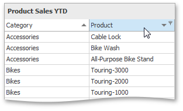
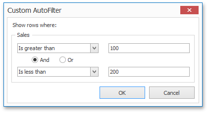

Data Presentation Basics
The Grid displays data in a two-dimensional table that supports four types of columns.

- The dimension column displays values from the bound data item "as is".
- The measure column displays summaries calculated from data in the bound data item.
- The delta column, bound to two measures, calculates summaries for both measures, and displays the difference between these summaries.
- The sparkline column visualizes the variation of summary values over time.
Sort Grid Rows
To sort records by a column's values and replace existing sort conditions that are applied to the current or other columns, click the target column's header until an Up or Down arrow icon is displayed within the header. The Up and Down arrows indicate ascending and descending sort orders, respectively.

To sort records by a column's values while preserving existing sort conditions, click a column header while holding the SHIFT key until an Up or Down arrow icon is displayed within the header.

To remove sorting by a column, click a column header while holding down the CTRL key.
Filter Grid Data
To filter grid data, click the filter button (the icon) and select the required filter value in the invoked filter dropdown list.

Click Custom to construct filter criteria involving up to two conditions. This will invoke the Custom AutoFilter dialog, allowing you to compare a column with one or two values.

To clear the filter applied to a specific column, invoke the filter dropdown list and click All.

To clear all filter criteria, click the Close Filter button within the Filter Panel.

Tooltips
A Grid dashboard item can display a tooltip when the mouse pointer is hovered over the bar in the measure column.

The tooltip shows the value in the measure column as text.
When the mouse pointer is hovered over the cell in the sparkline column, the tooltip can display start/end values and minimum/maximum values.